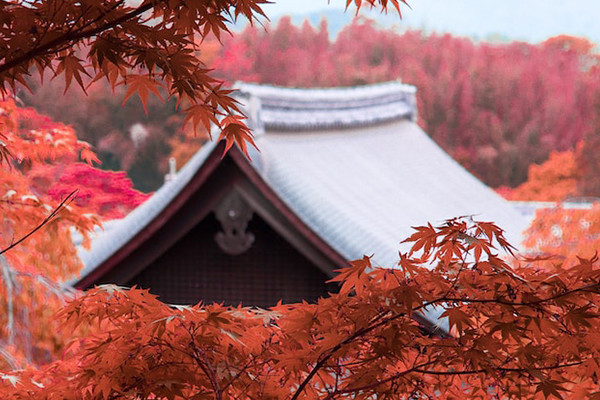

日本の秋
普段、葉が緑色に見えるのはクロロフィルが含まれるからであるが、寒くなり日照時間が短くなるとクロロフィルが分解される。また、葉柄の付け根に離層という特殊な水分を通しにくい組織ができ、葉で作られた水溶性のブドウ糖や蔗糖などの糖類やアミノ酸類が葉に蓄積し、その糖から光合成を利用して新たな色素が作られたりする。その過程で葉の色が赤や黄色に変化し、紅葉が起こる。
普段、葉が緑色に見えるのはクロロフィルが含まれるからであるが、寒くなり日照時間が短くなるとクロロフィルが分解される。また、葉柄の付け根に離層という特殊な水分を通しにくい組織ができ、葉で作られた水溶性のブドウ糖や蔗糖などの糖類やアミノ酸類が葉に蓄積し、その糖から光合成を利用して新たな色素が作られたりする。その過程で葉の色が赤や黄色に変化し、紅葉が起こる。